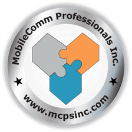
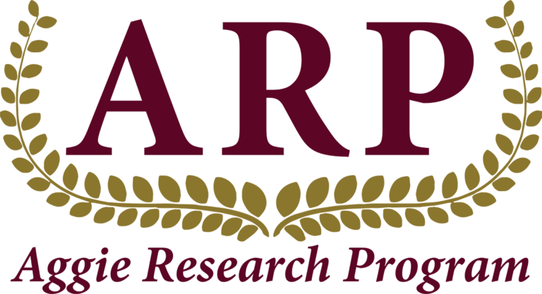

- Personal Website

- My personal website is the first real project I have taken on, I wanted to create this in order to showcase my skills, experience, and a little bit about myself! Also, the website uses only HTML and CSS. It was a tremendous amount of fun to create this website because it really let me be in control of what I want to do, where I want to do it, and allowed me to complete it on my own schedule. I can’t wait to continually add more information to the website and maybe create a new website which is even more modern and interactive!
- Photography API
- My Photography API is the newest project that I will be starting soon. I am deciding whether or not to create it owns independent website which has the API in it or implement it within this website in the Photography section. The purpose of this API is to give me experience with different frameworks of JavaScript such as Node.JS and Express.JS and teach me working knowledge of GET and PUT requests. Also, the purpose of this API is to be able to use my edited pictures within your own website for decoration and maybe teach people how to create APIs such as the one I will make. I’m extremely excited to start this project as it will be one of the first projects I have with JavaScript!
- 
- Mobilecomm Professionals Inc : Richardson, TX
- Electrical Engineering Intern
- June 2019 - July 2019
- My internship consisted of a 3 expereiences: Field Work, Data Collection, and Script Developer!
- For Field Work, another intern and I were able to go across Collin County in order to perform maintenance and required updates on telecommunications cell-sites in order to install T-Mobile’s 4G LTE network. This experience was really amazing because it allowed me to see how telecommunication companies actually install and maintain their networks which we use constantly every day!
- For Data Collection, I was able to integrate with a Downtown Dallas Team which goes throughout a predetermined route daily in the search for weak signal strength zones throughout the city. I was able to see how over 50 phones are utilized in order to collect critical cellular strength data, which would be analyzed by engineers back in the office. This part was super fun because it allowed me to gain some real advice from senior members of the company and see how they actually collect useful data!
- For the Script Developer, I had the opportunity to see how senior developers at Mobilecomm use Python in order to create scripts which are utilized by cell-site telecommunication towers. The parameters some of these towers require are frequency, strength, and neighbors! Lastly, I had the chance to work with MScripter, a software developed by developers at Mobilecomm that creates an easy way to complete scripts in an efficient and effective manner.
- 
- Design of Novel Electrodes for Next Generation Flexible Electronics : College Station, TX
- Research Member
- September 2019 - Present
- In my undergraduate research team led by Dr. Hong Liang and Swarn Jha, I have had the opportunity to design and develop novel supercapacitors which are both cost-effective and environmentally friendly. As a team, we are hunting for supercapacitors which have desired characteristics such as high capacitance, fast charge/discharge rates, long life cycles, and many more. I have had the chance to work with novel nanoparticles such as MnO2 and NiWO4 in a state-of-the-art laboratory located on campus at Texas A&M University.
- I have learned a lot from my mentors and friends, Swarn Jha and Siddhi Mehta, in regard to the importance of hybrid super-capacitors, research, and teamwork. They have taught me a considerable amount about testing supercapacitors using Gamry devices and creating remarkable research papers. Through them, I have had the chance to attend LAUNCH undergraduate research expo, be featured in the Texas A&M Today newspaper, and have a published paper under my name which is featured in the June 2020 Energy Storage Journal. The paper can be found below!
- “Design and Synthesis of high performance flexible and green supercapacitors made of manganese-dioxide-decorated alkali lignin”.
- Collegiate Endeavors : Plano, TX
- Administrative Assistant
- May 2018 - Present
- Collegiate Endeavors is a private college preparation company which helps students do well on the SAT, ACT, and ISEE examinations. It also advices students with college admissions such as understanding which schools you could get admitted into, helping with acing college essays, and preparing other important documents.
- My job is helping the founder, Nina Verma, with administrative duties such as administrating practice SAT, ACT, and ISEE exams as well as grading them. I also help with collecting, organizing, and delivering required study materials for students to do well on their examinations.